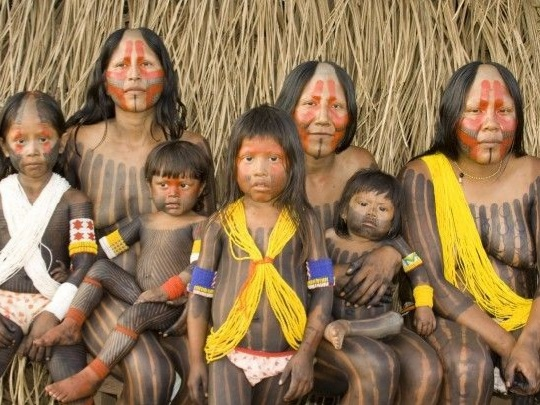
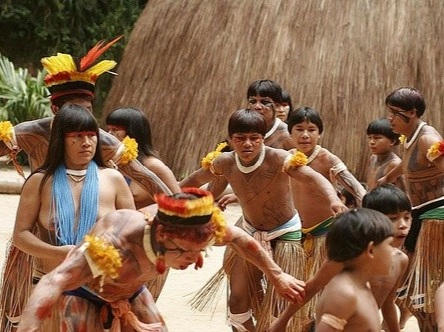

O QUE SÃO OS POVOS INDIGENAS?

Quando estamos falando de índios, estamos falando de um grupo de pessoas reconhecidas como os primeiros habitantes do Brasil. Os índios são os seres humanos que se estabeleceram no território nacional há milênios e estavam aqui quando os portugueses chegaram, em 1500.
Não se sabe com precisão a população de indígenas no Brasil quando os portugueses aqui chegaram, mas as estimativas mais aceitas trabalham com a possibilidade de que havia de cinco a sete milhões de índios no território nacional. Infelizmente, o número de indígenas atualmente em nosso país é sensivelmente menor.
Segundo o Censo de 2010, o total de pessoas que se autodeclararam indígenas foi de 817 mil. A autodeclaração, como percebemos, é o método utilizado no Censo para identificar essa população em nosso país. Entretanto, existe um método mais técnico que pode ser usado por pesquisadores da área."
OS INDIGENAS SÃO OBRIGADOS A VIVER ISOLADOS?

Não. O fato de uma pessoa se identificar como índio ou ser identificada como índio não obriga ela a nada. Sendo assim, é um direito de cada indivíduo indígena viver da forma como quiser, seja isolado, seja próximo da sociedade brasileira. Assim, um índio tem direito de escolher se ele viverá com sua comunidade, em uma aldeia, ou se ele viverá integrado em nossa sociedade.
O fato de ele viver isolado ou integrado também não altera em nada o direito dos povos indígenas de lutarem pela preservação de sua cultura e de suas terras. Outro ponto importante é que o fato de uma pessoa ser identificada como indígena não lhe tira o direito de fazer uso da tecnologia presente em nossa sociedade.